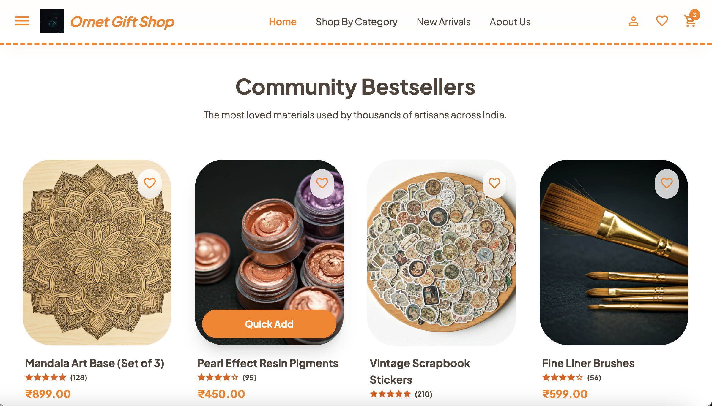

Ornet Gift Shop
Role
Designer + Frontend
Team
1 Backend Engineer
Platform
Web, iOS, Android
Stage
0 → Shipped

Overview
I built a responsive art and craft e-commerce website focused on creating a smooth browsing and shopping experience across devices. The goal was to combine a clean storefront UI with strong performance, intuitive navigation, and a visually distinct brand feel that matched the handmade nature of the products.
Worked directly with - Client
Technical Decisions
Architecture engineered for speed and scalability:
Challenge
The main challenge was to make the website feel different from a typical e-commerce store while still keeping it easy to use.
The interface needed to reflect the creative, handcrafted nature of the brand without becoming visually heavy or confusing.
Maintaining design fidelity and handcrafted aesthetics across a multitude of screen resolutions and devices.
Approach / Strategy
01 User Journey
I started with user journeys and business goals, then mapped the core flows to reduce friction from discovery to checkout.
02 Mobile-First UI
The UI was designed mobile-first with clear hierarchy, fast scanning, and consistent CTAs to support easy browsing and conversion.
03 Trust Signals
I focused on trust-building details like product clarity, pricing visibility, and reassurance elements to improve purchase confidence.
04 Performance Focus
Performance and scalability were kept in mind from the start, so the interface stays clean, fast, and easy to extend.
/app → App shell (providers, routing)
/pages → Route views
/features → Functional slices (e.g., cart)
/entities → Domain models (User, Product)
/shared → Reusable logic/components
Frontend Architecture
Component-driven, layered architecture built for scalability and performance.
UI → Reusable React components
Design system driven visual layer.
State → Redux (global), local state
Predictable state management across the app.
Data → React Query (server state, caching)
Optimized data fetching and real-time syncing.
Clear separation of concerns. High cohesion, low coupling. Optimized for maintainability, fast iteration, and real-world performance.
UI Implementation
The visual style was implemented using Tailwind CSS, ensuring layout system rigor, design consistency, and maximum component reuse.
Interactions & Motion
I used CSS animations and transitions to make the interface feel more alive without distracting from the content. Some of the interaction work included (Hover to see the effects) :
- Smooth hover effects
- Gentle transitions
- Lightweight motion
- Subtle feedback
"The goal was not to over-animate, but to make interactions feel intentional and polished."
Performance & Optimization
code-splitting + lazy loading
Memoization + Fewer re-renders
tree-shaking + optimized imports
AI Assistance
Leveraging tools like Stitch(Google) and Figma to accelerate design, ideation, and Cline & Copilot for development.
Responsive Experience
Reinforcing real-world usability through adaptive interfaces.
Mobile-first
Optimized layouts ensuring core performance on small viewports.
Cross-device
A uniform brand experience across iOS, Android and Web browsers.